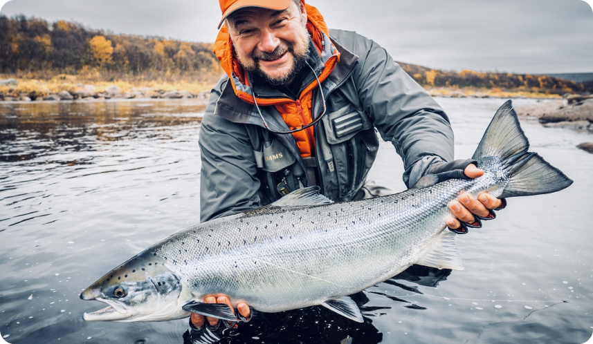
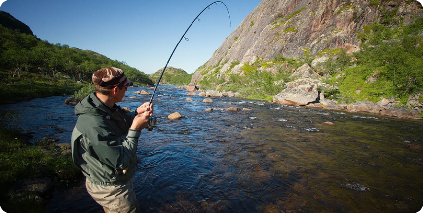

The Northern Rivers of Russian’s Kola Peninsula including the Kharlovka, Eastern Litza, Rynda and Zolotaya must be considered some of the very best Atlantic Salmon rivers in the world today. The territory of the ASR is extremely remote and unspoiled by human intervention. The whole operation is efficiently managed with military discipline. Both intimate and manageable in size, the Northern Rivers provide unique challenges to our guests with the possibility for huge rewards. The following pre travel document will explain the conditions you will encounter, the tackle and clothing that we feel is necessary and some general background information. Before leaving for the Atlantic Salmon Reserve we suggest that you use the following guidelines to help equip yourself suitably. Basic Itinerary for the week.
Both intimate and manageable in size, the Northern Rivers provide unique challenges to our guests with the possibility for huge rewards. The following pre travel document will explain the conditions you will encounter, the tackle and clothing that we feel is necessary and some general background information. Before leaving for the Atlantic Salmon Reserve we suggest that you use the following guidelines to help equip yourself suitably. Basic Itinerary for the week.
The whole operation is efficiently managed with military discipline. Both intimate and manageable in size, the Northern Rivers provide unique challenges to our guests with the possibility for huge rewards. The following pre travel document will explain the conditions you will encounter, the tackle and clothing that we feel is necessary and some general background information. Before leaving for the Atlantic Salmon Reserve we suggest that you use the following guidelines to help equip yourself suitably. Basic Itinerary for the week.
Fill out the form that we can contact you for early booking.